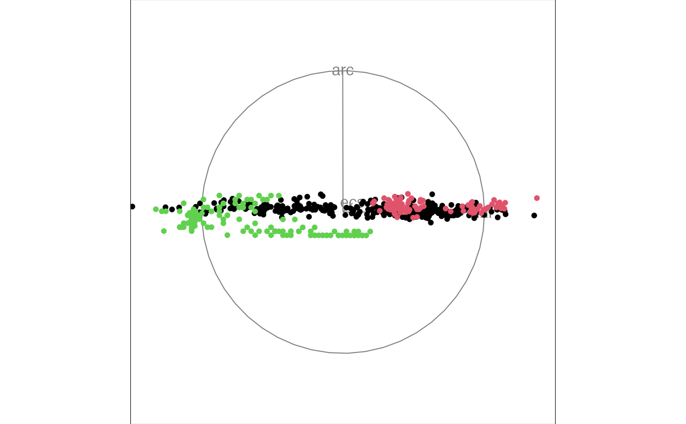

This data is from a paper by Forina, Armanino, Lanteri, Tiscornia (1983) Classification of Olive Oils from their Fatty Acid Composition, in Martens and Russwurm (ed) Food Research and Data Anlysis. We thank Prof. Michele Forina, University of Genova, Italy for making this dataset available.
A 572 x 10 numeric array
region Three super-classes of Italy: North, South and the island of Sardinia
area Nine collection areas: three from North, four from South and 2 from Sardinia
palmitic, palmitoleic, stearic, oleic, linoleic, linolenic, arachidic, eicosenoic fatty acids percent x 100
head(olive)#> region area palmitic palmitoleic stearic oleic linoleic linolenic #> 1 1 North-Apulia 1075 75 226 7823 672 36 #> 2 1 North-Apulia 1088 73 224 7709 781 31 #> 3 1 North-Apulia 911 54 246 8113 549 31 #> 4 1 North-Apulia 966 57 240 7952 619 50 #> 5 1 North-Apulia 1051 67 259 7771 672 50 #> 6 1 North-Apulia 911 49 268 7924 678 51 #> arachidic eicosenoic #> 1 60 29 #> 2 61 29 #> 3 63 29 #> 4 78 35 #> 5 80 46 #> 6 70 44#>#>#>#>